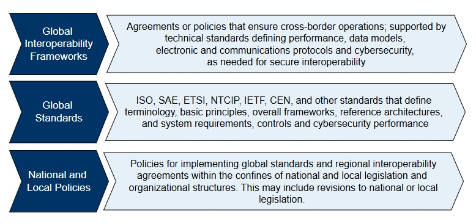

ITS Security Regulations, Frameworks, Standards and Guidance Documents¶
Cybersecurity for Intelligent Transport Systems (ITS) is governed by a layered set of regulations, frameworks, standards and policy. These instruments regulate or specify different aspects of ITS cybersecurity, from how organizations must govern their ITS implementations, to how product vendors must design cybersecurity into devices from the outset, to how technical standards define the protocols and controls that enable secure communications and trust management.
This page provides stakeholders with a reference to the major regulatory and standards instruments shaping ITS cybersecurity worldwide. It highlights how global frameworks interact with regional obligations, and how technical standards implement those requirements in practice.

Global Interoperability Frameworks¶
Global interoperability frameworks establish binding or cross-border rules that ensure consistent cybersecurity obligations for ITS devices and services. They provide the legal and regulatory foundation for secure ITS operations and are supported by technical standards that enable practical interoperability.
European Union Cyber Resilience Act (CRA)¶
The European Union (EU) Cyber Resilience Act is a binding regulation that takes effect in the European Union from December 2024. It applies to all digital products, including ITS devices such as On-Board Units (OBUs), Roadside Units (RSUs), and Traffic Management Systems. The CRA requires that products be designed, developed, and maintained with cybersecurity as a core property throughout their lifecycle. Key obligations include:
- security-by-design
- secure default configurations
- release without known exploitable vulnerabilities
- continuous vulnerability remediation
- patching for the full operational lifetime of the product
Products must undergo conformity assessment and display a CE marking before being placed on the EU market. The CRA also mandates vulnerability disclosure processes, incident handling procedures, and supply chain security requirements. This regulation establishes a harmonized baseline of cybersecurity expectations for all ITS products used within the EU.
NIS Directive¶
NIS2 requires operators of essential and digital services, which include transport and mobility operators, to implement cybersecurity risk management measures, report significant incidents, and manage supply chain security. Unlike CRA’s product focus, NIS2 addresses organizational resilience, requiring agencies, service providers, and operators to put governance and operational processes in place. NIS2 does not mandate ISO/IEC 27001 or ISO/SAE 21434 specifically, but both can serve as acceptable evidence of “appropriate and proportionate” cybersecurity measures.
UNECE Regulations R155 and R156¶
The United Nations Economic Commission for Europe (UNECE) has issued two vehicle cybersecurity regulations that apply to manufacturers placing vehicles on regulated markets.
- UNECE R155 requires manufacturers to implement a Cybersecurity Management System (CSMS) across the lifecycle of the vehicle, from design through post-production. It obliges manufacturers to identify threats, implement mitigations, and demonstrate compliance during type approval. ISO/SAE 21434 provides the detailed engineering processes to support this.
- UNECE R156 mandates a Software Update Management System (SUMS) to ensure secure and auditable software and firmware updates, including measures for authentication, integrity protection, and traceability.
Together, R155 and R156 define how OEMs and suppliers address lifecycle security in vehicles and connected ITS systems.
ITS Directive (Directive 2010/40/EU)¶
The ITS Directive provides the EU framework for coordinated ITS deployment. It enables binding delegated acts across domains such as real-time traffic information and cooperative ITS. Service providers under the Directive may be required to provide feedback when distributing ITS data and messages. This has implications for how IOOs, map providers, and OEMs structure feedback and discrepancy handling in ITS deployments
Global Standards¶
Global standards provide a structured methodology for managing cybersecurity risk across organizations and supply chains. They define terminology, governance practices, risk management processes, and assurance methods that are not ITS-specific but support ITS stakeholders with understanding how to apply the standards to the ITS domain. These standards may enable stakeholders to demonstrate compliance with regulations such as the EU CRA, UNECE R155/R156, or U.S. federal guidance.
NIST Cybersecurity Framework (CSF)¶
The NIST Cybersecurity Framework is widely adopted in North America as a risk-based approach to organizing cybersecurity activities. It is structured around six functions: Govern, Identify, Protect, Detect, Respond, and Recover. The CSF guides organizations in setting cybersecurity expectations, performing risk assessments, and aligning operational practices such as patching, monitoring, and incident response. For ITS deployments, state departments of transportation, municipalities, and traffic management centers often use the CSF to structure their security programs and demonstrate alignment with national policy guidance. While the CSF provides a strong governance structure, it does not define technical requirements for ITS protocols or devices, which must be derived from sector-specific standards.
The CSF is often paired with NIST SP 800-53, which provides the detailed catalog of security and privacy controls that can be tailored to ITS devices, systems, and applications. FHWA’s ITS Security Control Sets are directly derived from NIST SP 800-53.
ISO/IEC 27001¶
ISO/IEC 27001 is an international standard for establishing an Information Security Management System (ISMS). It requires organizations to identify risks, implement controls, and continuously improve security posture through audits and reviews. For IOOs, compliance with ISO/IEC 27001 provides assurance to regulators and partners that the organization is managing security in line with global best practices. Like the NIST CSF, it does not address ITS-specific requirements but it provides a foundation for mapping of ITS security standards to specific cybersecurity features and functions. Certification to ISO/IEC 27001 demonstrates that an organization has implemented structured governance over information security, including:
- Access control
- Supplier and third-party management
- Asset and configuration management
- Auditing and continuous improvement
ISO/SAE 21434¶
ISO/SAE 21434 establishes detailed engineering practices for automotive and ITS cybersecurity by defining lifecycle processes that begin with threat analysis and risk assessment and extend through secure design, development, and supplier coordination. The standard also emphasizes the importance of validation, post-production monitoring, and incident response, ensuring that security is treated as an ongoing responsibility rather than a one-time exercise. It is recognized globally as the engineering benchmark for demonstrating compliance with UNECE R155, providing manufacturers with a structured method to show that cybersecurity has been embedded into every stage of the vehicle and ITS product lifecycle.
National and Local Policies¶
National and local governments are responsible for translating global frameworks and standards into enforceable requirements within their jurisdictions. These policies define how international obligations are applied in practice, shaping procurement rules, oversight mechanisms, and operational compliance for agencies, manufacturers, and operators.
In the United States, federal and state agencies frequently use the NIST Cybersecurity Framework and the NIST SP 800-53 control catalog as the foundation for transportation cybersecurity programs. For ITS deployments, the Federal Highway Administration (FHWA) has developed ITS Security Control Sets that tailor NIST controls to devices such as traffic signal controllers, roadside units, and transportation management systems. These control sets provide Infrastructure Owner-Operators (IOOs) with prescriptive guidance on configuring devices, enforcing access control, and ensuring compliance with national cybersecurity objectives. They are also being used as templates for training materials and deployment guidance across state and local agencies.
In the European Union, national authorities use conformity assessments to verify compliance with binding regulations such as the Cyber Resilience Act (CRA) and UNECE Regulations R155 and R156. Products must meet these requirements before they can be marketed or deployed. Manufacturers may adopt ISO/IEC 27001 to structure their organizational security programs and demonstrate that governance practices align with NIS2 obligations, while product-level compliance is verified through the CRA and UNECE mechanisms. The C-Roads Initiative has also developed Protection Profiles for ITS devices (for example, the RSU Gateway PP BSI-CC-PP-0122, 2024), which provide reference security targets for evaluation.
Certificate Policy (CP) and Certificate Practices Statements (CPS)¶
While organizational frameworks such as ISO/IEC 27001, the NIST Cybersecurity Framework, or the EU Cyber Resilience Act provide general requirements for governance and risk management, CP and CPS documents translate those high-level obligations into PKI-specific trust rules. They ensure that certificate authorities, enrolment authorities, and authorization services operate within an auditable and enforceable policy structure.
A Certificate Policy (CP) defines the conditions under which certificates are issued, managed, and revoked within an ITS Public Key Infrastructure (PKI). Certificate Practice Statements (CPS) provide the operator-specific implementation details that must align with the CP. Together, these documents establish the governance, approval criteria, and enforcement mechanisms that ensure certificates are only issued to eligible devices and entities, are used for authorized purposes, and can be revoked when necessary. Together, CPs and CPSs form the bridge between regulatory obligations (such as CRA or NIS2) and the technical enforcement of trust through PKI.
The structure of trust management varies by region. In North America, the Security Credential Management System (SCMS) uses a quorum of Electors to manage the Certificate Trust List (CTL) and to approve or revoke Root Certificate Authorities (RCAs). Each SCMS Provider operates under a CP that defines its responsibilities for certificate issuance, rotation, and misbehaviour report handling. SCMS Provider CPs must comply with SCMS Provider Requirements, as specified by the SCMS Manager. In Europe, the Cooperative ITS Credential Management System (CCMS) is managed centrally by a Certificate Policy Authority (CPA), which governs the European Certificate Trust List (ECTL). Root CAs seeking to be included in the ECTL must conform to the harmonized CP, and compliance is enforced through audit and assessment.
Both SCMS and CCMS models rely on CP/CPS documents to ensure that only eligible devices are authorized to participate in ITS communications, that certificates are properly managed across their lifecycle, and that misbehaviour can be detected and acted upon. This ensures that trust anchors remain valid and that the overall PKI ecosystem is resilient and interoperable across jurisdictions.
Technical Standards¶
Organizational frameworks and policy documents define the governance structure for cybersecurity in ITS. Technical standards implement these requirements at the protocol, device, and system level, ensuring that the policies described in frameworks, regulations, and certificate policies are realized in practice. These standards provide the specific technical controls needed for secure communications, device hardening, certificate management, and misbehaviour detection.
The following categories group ITS security standards according to their primary function:
- Edge Device Security Standards – define requirements for hardware security, secure boot, tamper detection, and cryptographic modules in OBUs, RSUs, and other ITS equipment.
- Network and Transport Security Standards – specify protocols for protecting confidentiality, integrity, and authentication of ITS data in transit.
- Application Security Standards – govern how ITS messages are formatted, signed, and validated to ensure interoperability and trust across jurisdictions.
- Security Management Standards – establish rules for security management and monitoring, certificate issuance, validation, revocation, misbehaviour reporting, and overall PKI operations.
Edge Device Security Standards¶
Use these standards to select, evaluate, or require hardware that supports key storage, secure boot, tamper detection, and cryptographic processing. This supports trusted execution and resilience at the component level.
| Standard | Document Type | Description | Stakeholder Role(s) |
|---|---|---|---|
| IEEE 802.3 | Standard | Ethernet standard supporting wired communications among traffic infrastructure, including support for secure physical connections. | Infrastructure Owners and Operators |
| IEEE 802.1X | Standard | Network access control protocol often used in Ethernet-based ITS backhaul networks to authenticate RSUs and field devices. | Infrastructure Owners and Operators |
| SAE J3101 | Standard | Defines hardware security requirements for ground vehicles, including secure boot, key storage, and hardware protections against tampering. | Vehicle OEMs |
| ISO/IEC 19790:2025 | Standard | Requirements for cryptographic modules used to protect sensitive data, applicable to both software and hardware modules. | Credential Management Authorities |
| NIST FIPS 140-3 | Standard | Federal standard for certifying cryptographic modules, used to evaluate tamper-resistant secure elements. | Credential Management Authorities |
| Trusted Platform Module (TPM) / ISO/IEC 11889 | Standard | Guidance for secure boot and hardware-based trust anchors in automotive ECUs. | Vehicle Manufacturers and OEMs |
| Protection Profile V2X Hardware Security Module | Guidance | Requirements for HSMs in V2X systems with secure key lifecycle and resistance to physical attacks. | Credential Management Authorities |
| Vehicle C-ITS station profile | Guidance | Technical and operational requirements for C-ITS vehicle stations in Europe. | Vehicle OEMs |
| UNECE R155 | Standard | Regulation that mandates cybersecurity management systems for vehicle manufacturers, including hardware risk mitigation. | Vehicle OEMs |
| ISO 24089 | Standard | Post-production update requirements. | Vehicle OEMs |
| UNECE R156 | Regulation | Mandates secure update systems for vehicles. | Vehicle OEMs |
| SAE J3101 | Standard | Hardware trust anchors and secure boot. | Vehicle OEMs |
| Trusted Platform Module (TPM) | Standard | Hardware-based trust and boot integrity. | Vehicle OEMs |
| ISO/IEC 19790:2025 | Standard | Cryptographic module security requirements. | Application and Service Providers, Cybersecurity Oversight and Policy Bodies |
| ISO/TR 23786 | Standard | Security and risk methods for remote access to vehicle systems. | Infrastructure Owners and Operators Application and Service Providers |
| Vehicle C-ITS station profile | Guidance | Outlines technical and operational requirements for European vehicle ITS stations. | Application and Service Providers |
| Protection Profile V2X Hardware Security Module | Guidance | Requirements for HSMs with secure key lifecycle and physical attack resistance. | Credential Management Authorities, Application and Service Providers |
| SAE J2945/1 On-Board System Requirement for V2V Safety Communications | Standard | Security requirements for V2V including key provisioning and secure storage. | Application and Service Providers |
Network and Transport Security Standards¶
Apply these standards to enforce confidentiality, integrity, and authentication of data in transit. They define secure sessions for V2X, center-to-field, and backend communications using IP and non-IP protocols.
| Standard | Document Type | Description | Primary Role(s) |
|---|---|---|---|
| IEEE 1609.3 | Standard | Defines networking services for WAVE including IPv6 and WSM. | Infrastructure Owners and Operators |
| ISO 15118 | Standard | Secure protocols for EV charging with mutual authentication. | Application and Service Providers |
| TLS 1.3 (RFC 8446) | Standard | Modern cryptographic protocol for secure backend communications. | Infrastructure Owners and Operators |
| DTLS | Standard | Datagram version of TLS for UDP-based secure transport. | Application and Service Providers |
| ISO 21217 | Standard | ITS Station architecture defining network stack. | Application and Service Providers |
| ETSI TS 102 940 | Standard | Specifies high-level C-ITS security architecture. | Credential Management Authorities |
| ISO 21186-3 | Standard | Secure data exchange guidelines in C-ITS. | Application and Service Providers |
| IEEE 802.11p / IEEE 802.11-2016 | Standard | Specifies DSRC/WAVE radio communications at 5.9 GHz for vehicular networking. | Infrastructure Owners and Operators |
| 3GPP LTE-V2X / NR-V2X | Standard | Specifies cellular V2X radio interfaces for sidelink communication. | Infrastructure Owners and Operators |
| IEEE 802.1X | Standard | Network access control protocol used in Ethernet-based ITS backhaul networks. | Infrastructure Owners and Operators |
| IEEE 802.3 | Standard | Ethernet standard supporting wired communications among traffic infrastructure. | Infrastructure Owners and Operators |
| IEEE Std. 1609.3 | Standard | Defines IPv6, WAVE short message protocol and service advertisement. | Infrastructure Owners and Operators Application and Service Providers |
Application Security Standards¶
These standards define how ITS messages are structured, signed, and validated. They enable cross-vendor and cross-jurisdiction interoperability and ensure message trustworthiness during exchange.
| Standard | Document Type | Description | Primary Role(s) |
|---|---|---|---|
| SAE J2735 | Standard | Defines message formats like BSM, SPaT, MAP. | Application and Service Providers |
| SAE J2945/x series | Standard | Profiles for message behaviour and signing for V2X. | Application and Service Providers |
| ETSI EN 302 637-2 / -3 | Standard | Defines CAM and DENM message formats. | Application and Service Providers |
| ISO 16460 | Standard | Harmonized framework for V2X messages. | Standards Development Organizations |
| ETSI TS 102 894-2 | Standard | Common ITS data dictionary. | Application and Service Providers |
| ETSI TS 103 097 | Standard | European message authentication and trust validation. | Credential Management Authorities |
| ISO 19091 | Standard | Harmonized SPaT/MAP message format (internationalized SAE). | Application and Service Providers Infrastructure Owners and Operators |
| ISO/TR 21186-1 | Standard | Use cases and profiles for secure data exchange. | Application and Service Providers |
| ISO/TS 21184 / ISO/TS 21185 | Standard | Data and communication profiles for trusted ITS exchange. | Application and Service Providers, Credential Management Authorities |
| SAE J2945/4 Road Safety Applications | Standard | Security requirements for RSZW, LCW messages and digital signature enforcement. | Application and Service Providers |
| SAE J3161/1 | Standard | Security for LTE-V2X in light-duty and public safety vehicles. | Application and Service Providers, Infrastructure Owners and Operators |
| SAE J3161/1B | Standard | Extends J3161/1 to non-light-duty vehicles and motorcycles. | Application and Service Providers |
| SAE J3161/1C | Standard | Covers school bus-specific V2V security and safety requirements. | Application and Service Providers |
| ISO 19091 | Standard | Harmonized SPaT/MAP message format (internationalized SAE) | Application and Service Providers, Infrastructure Owners and Operators |
Security Management Standards¶
Implement these standards to perform secure management of edge devices, and to issue, validate, and revoke certificates and to manage permissions.
| Standard | Document Type | Description | Primary Role(s) |
|---|---|---|---|
| IEEE 1609.2 | Standard | Defines secure message format and certificates. | Credential Management Authorities |
| IEEE 1609.2.1-2022 | Standard | Certificate lifecycle and permissions enforcement. | Credential Management Authorities |
| ETSI TS 102 941 | Standard | Trust and privacy management for C-ITS. | Credential Management Authorities |
| ETSI EN 319 411-1 | Standard | Trust service provider requirements for certs. | Cybersecurity Oversight and Policy Bodies |
| C-ITS Point of Contact Protocol | Guidance | CA cross-certification protocol in Europe. | Credential Management Authorities |
| ETSI TS 102 941 (Trust List Management) | Standard | CTL/CRL processes for European PKI trust frameworks. | Credential Management Authorities |
| ETSI TS 102 942 | Standard | Access control rules and cert-based enforcement. | Credential Management Authorities, Infrastructure Owners and Operators |
| ETSI TS 102 943 | Standard | Encryption and confidentiality services. | Credential Management Authorities |
| ETSI TS 103 248 | Standard | Pseudonym management and privacy protection in C-ITS. | Credential Management Authorities, Application and Service Providers |
| ISO 22320 | Standard | Incident management processes and protocols. | Infrastructure Owners and Operators |
| SAE J3061 / ISO/SAE 21434 | Standard | Cybersecurity lifecycle and incident response. | Vehicle OEMs |
| NTCIP Secure Profiles (TLS, SSH) | Guidance | Secure management for center-to-field devices. | Infrastructure Owners and Operators |
| SAE J3287 | Standard | Standard for V2X misbehaviour reports. | Credential Management Authorities |
| ETSI TS 102 941-2 | Standard | European misbehaviour reporting procedures. | Credential Management Authorities |
| ETSI TS 103 759 | Standard | Standardized misbehaviour message format. | Credential Management Authorities |
| SCMS ASN.1 Misbehaviour Reports | Standard | Misbehaviour report encoding for SCMS. | Credential Management Authorities |
| SCMS Misbehaviour Application Spec | Standard | SCMS adjudication and report format. | Credential Management Authorities |
| SCMS Manager: ASN.1 Specification for Misbehaviour Reports | Standard | Defines interoperable ASN.1 encoding for MBRs. | Credential Management Authorities, Infrastructure Owners and Operators |
| SCMS Manager: Misbehaviour Report and Application Specification | Standard | MBR data format and adjudication rules. | Credential Management Authorities, Infrastructure Owners and Operators |
| ETSI TR 103 460 | Standard | Survey of misbehaviour detection techniques. | Cybersecurity Oversight and Policy Bodies, Credential Management Authorities |
| NTCIP / SNMPv3 (RFC 3410) | Standard | Management protocols with authentication and encryption for ITS field device communications. | Infrastructure Owners and Operators |